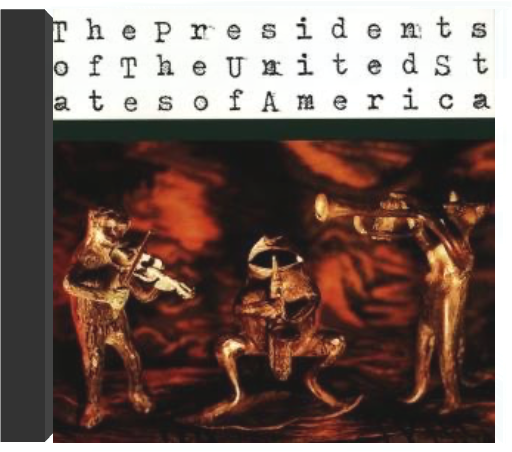

 the presidents of the united states of americathe presidents of the united states of america  B000024JDX  Pulp Fiction, le film, fut un succès délirant. Celui de sa bande originale y contribua-t-il ou n'en fut-il qu'une conséquence ? Indissociables l'un de l'autre, Pulp Fiction la B.O. suit fidèlement le film et vice-versa, gangsters, petits truands et filles présents en esprit dans chaque chanson. Quentin Tarantino, se servant de sa B.O. comme d'un médium, exhume notamment un genre bien négligé depuis les années cinquante, la musique surf ("Misirlou" de Dick Dale – même repris depuis chez Taxi 2 – ou les morceaux des oubliés Tornadoes, Lively One, Centurians, Revels et autres obscurs combos surf). Tarantino mêle à cela des dialogues devenus cultes extraits du film et quelques vieux tubes plus ou moins disparus des ondes, de la ballade nostalgique de Ricky Nelson, "Lonesome Town", au funk délirant de Kool & The Gang, de la sensualité d'Al Green au sublime "Son Of A Preacher Man" de Dusty Springfield. Et couronnant tout cela, le frénétique "You Never Can Tell" de Chuck Berry (dorénavant à l'honneur dans n'importe quelle fête depuis ce duo de danse endiablé entre Uma Thurman et John Travolta) ou l'imparable reprise de Neil Diamond par Urge Overkill "Girl, You'll Be A Woman Soon" font de cette B.O. la bande-son idéale pour rouler le long de la côte californienne, la fenêtre de la Buick grande ouverte. —Anne-Claire Norot  S'il est un groupe phare issu de la vague contestataire qui se déploya contre les positions du gouvernement de George Bush au moment de la guerre du Golfe, c'est bien Rage Against The Machine. Toute sa rage contre la machine à broyer américaine est déjà inscrite dans le patronyme choisi par le groupe californien dont deux des membres savent ce que militer signifie : Tom Morello est un métis dont le père s'est battu contre la colonisation au Kenya, et Zack de La Rocha, un Chicano originaire de Los Angeles. Avec deux autres comparses, ils mettent sur pied un véritable gang dont la fusion entre le rap de Public Enemy, le punk des Clash et le metal de Pearl Jam fait vite le tour du monde. Dès la pochette de ce premier opus éponyme, Rage Against The Machine plante le décor avec la photo célèbre d'un bonze s'immolant pour protester contre la guerre du Viêt-Nam. Produit par un ex-collaborateur d'Ozzy Osbourne et des Red Hot Chili Peppers, Rage Against The Machine fait de larges emprunts à Martin Luther King, Malcolm X et au Che, porté par des accords évoquant le hard de Led Zeppelin et le rap urbain des Bad Brains. Dès sa sortie, ce premier enregistrement fut un véritable coup de poing sur la table, traduisant le ras-le- bol d'une jeunesse manipulée par un système dont le libéralisme ne s'avère être qu'un diktat de plus. —Philippe Robert |  Avec Evil Empire, Rage Against The Machine reste fidèle à la ligne de son parti clairement définie par son premier album. Une fois encore, la pochette (un jeune Soviétique déguisé en fils de Superman) comme le titre (allusion au nom dont Ronald Reagan avait affublé l'URSS) sont de véhémentes charges anti-américaines. Musique et textes continuent également de traduire l'engagement politique du quartette qui consacre alors une large partie de son temps au soutien des Zapatistes comme aux défavorisés de Los Angeles. Écoutez le titre "Bulls On Parade" et, en dehors de ses opinions claironnées, vous comprendrez mieux le pourquoi du succès de ce groupe qui allie, dans un détonnant mélang, rap, punk et hard. Evil Empire, fruit de la collaboration avec Brendan O'Brien (repéré du côté du son de Neil Young et de Pearl Jam), est un disque de fusion dont les fulgurances soniques ne s'embarrassent pas de fioritures et vont, sans tergiverser, droit au but. —Philippe Robert  Déjà les mauvaises langues disent : "RATM c'est toujours la même chose, ils ne savent pas se renouveler " Détrompez-vous ! Loin du style qui a assuré son succès , Rage Against The Machine reprend de façon éclatante plus de quinze grands classiques de tous bords, du rock avec "The Ghost Of Tom Joad" au hip-hop old school avec "Microphone Fiend" en passant par les Stooges avec "Down On The Street". Alors que l'épreuve de l'album de reprise est un pari toujours risqué, RATM frappe un grand coup. D'une part le groupe prouve qu'il sait changer de style et en plus il signe un album sans faille : des reprises vraiment différentes de l'originale, des bonus tracks, un son à toute épreuve que ce soit en studio ou en live… Bref du tout bon, rappelant les Garage Inc de Metallica et Undisputed Attitude de Slayer. Avec le départ de Zack De La Rocha, une page s'est tournée pour RATM, et les regrets n'en seront que plus vifs à l'écoute de ce superbe album. N'était-ce pas lui qui chantait :"Tu peux essayer autant que tu veux, tu ne peux pas stopper la musique !"… —Fabrice Tayot  Dans les années 90, Rage Against The Machine a symbolisé mieux qu'aucun autre groupe de son pays l'engagement contre la société américaine et ses débordements. Violente, leur musique fut une des premières à fusionner le metal avec le rap. Quant à leur positionnement politique, il fut surtout le fait du guitariste Tom Morello et du chanteur Zach de la Rocha. D'ailleurs, cet enregistrement public au Grand Olympic Auditorium est le dernier concert du groupe avant le départ de Zach de la Rocha. L'ambiance survoltée (parallèlement est sorti un DVD qui en témoigne), fait une large place aux tubes du groupe parmi lesquels, surtout, "Bulls On Parade" qui ouvre les hostilités (extrait de Evil Empire de 1996) et "Bullet In The Head" qui suit de près (extrait du premier album éponyme de 1992). Déjà, les paroles étaient une charge anti-Bush (en l'occurrence le père ; voir aussi "Bombtrack") ainsi que contre la guerre du Golfe, signées par un groupe qui pensait sincèrement modifier les consciences en profondeur ! Est également repris le "Kick Out The Jams" de MC 5. Incendiaire. —Hervé Comte  Released only in Japan in 1997, this collection of live and demo tracks - available for the first time on vinyl - is a must for Rage Against The Machine fans! Includes fiery versions of ''Take The Power Back'' and ''Bombtrack,'' covers of N.W.A.'s ''Fuck Tha Police'' and Public Enemy's ''Black Steel In The Hour Of Chaos'' (with Chuck D on lead vocals) and tracks from the band's original 1991 demo tape. |

Julien
Collection Total:
1 901 Items
1 901 Items
Last Updated:
Nov 1, 2021
Nov 1, 2021


 Made with Delicious Library
Made with Delicious Library